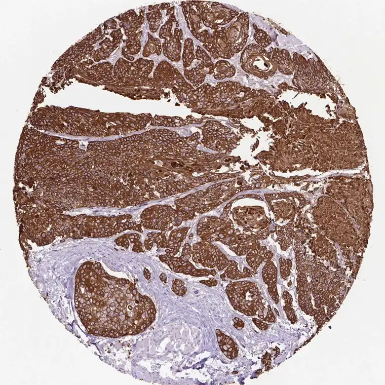

Pipeline
Preflight
0.0 s
DAB-positiveNuclei (haematoxylin)
14× faster
Speed replays measured runs: compute through scoring, 8 CPU workers each, 14× (bench/results/modal-design-20261121T205536Z.json)

Preflight
Speed replays measured runs: compute through scoring, 8 CPU workers each, 14× (bench/results/modal-design-20261121T205536Z.json)